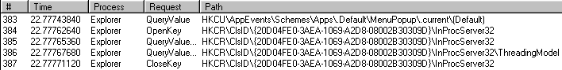
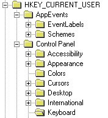
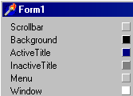

|
!! WARNING !! Until you feel absolutely comfortable with the registry only read information from it. DO NOT attempt to change existing information unless you know what the ramifications are! If you make undesirable changes your computer may not run properly or not at all. The demo code supplied here has been tested many times on Windows95/98. No testing has been done on Windows NT4/2000 or Windows XP.
|
Download the Article and Demos (122Kb)
What is the Registry?
The Registry is a database used to store settings and options for the 32 bit versions of Microsoft Windows; including Windows 95, 98 and NT. It contains information and settings for hardware, software, users, and preferences of the PC. Whenever a user makes changes to a Control Panel settings, or File Associations, System Policies, or installed software, the changes are reflected and stored in the Registry. In short, the registry is a shared resource to all programs running under Windows and NT.
Where is the Registry found?
The physical files that make up the registry are stored differently depending on your version of Windows; under Windows 95 & 98 it is contained in two hidden files in your Windows directory, called USER.DAT and SYSTEM.DAT, while under Windows NT the files are contained seperately in the "Windows / System32 / Config" directory.
What's the structure of the Registry?
As stated in Delphi's online help for TRegistry,
The registry is a database that an applications can use to store and retrieve configuration information. Configuration information is stored in a hierarchical tree. Each node in the tree is called a key. Every key can contain subkeys and data values that represent part of the configuration information for an application.
The Registry has a hierarchical structure. Although it looks complicated the structure is similar to the directory structure on your hard disk, with Regedit being similar to Windows Explorer. Each main branch (denoted by a folder icon in the Registry Editor, see below) is called a Hive, and Hives contains Keys. Each key can contain other keys (sometimes referred to as sub-keys), as well as Values. The values contain the actual information stored in the Registry. There are three types of values; String, Binary (similar to a Pascal record), and DWORD (Delphi specifies them as an integer) - the use of these depends upon the context.
There are six main branches, each containing a specific portion of the information stored in the Registry. They are as follows:
- HKEY_CLASSES_ROOT : This branch contains all of your file association types, OLE information and shortcut data.
- HKEY_CURRENT_USER : This branch links to the section of HKEY_USERS appropriate for the user currently logged onto the PC.
- HKEY_LOCAL_MACHINE : This branch contains computer specific information about the type of hardware, software, and other preferences on a given PC, this information is used for all users who log onto this computer.
- HKEY_USERS : This branch contains individual preferences for each user of the computer, each user is represented by a SID sub-key located under the main branch.
- HKEY_CURRENT_CONFIG : This branch links to the section of HKEY_LOCAL_MACHINE appropriate for the current hardware configuration.
- HKEY_DYN_DATA : This branch points to the part of HKEY_LOCAL_MACHINE, for use with the Plug-&-Play features of Windows, this section is dymanic and will change as devices are added and removed from the system.
Using the Registry
Not only can Windows itself read and write information to the registry, but so can you through your Delphi application. Many programmers will write information to the registry during the installation process of their application. When their application is running they retrieve the information using various methods of TRegistry. You are not limited to simply reading static information in the registry, but can write, edit, modify and delete information from the registry.
Caveat :: Just about every minute that your computer is running, something is being read from or written to the registry. It is not very obvious this is going on. To see what is going on, there is a tool called RegMon. It is a freeware utility which can be downloaded from
www.sysinternals.com
The RegMon tool can be of great service to you in learning what goes on behind the what you see. For instance, let's look to see what activity goes on by simply pressing the Windows Start button:

As you can see, Windows need to get information even for this simple operation. Once you have found something interesting simply double click on the line item to open up RegEdit. Remember that once RegEdit is open to be careful not to change something you don't know what that item does. Another nice tool to own is from Norton Utilities, it is called Registry Editor. One of the nice features is, bookmarks. To locate a key or value in RegEdit each time you fire it up you must search for it, or traverse the registry. In Norton's Registry Editor you can bookmark an item, then use the bookmark window to instantly go to that item.
To Access the Registry in Delphi
- Add registry to the uses clause of the unit you are going to open the registry with.
- In the routine which will open the registry declare a variable of type TRegistry.
Example:
Reg: TRegistry;
- Use the Create method to instantiate a TRegistry object.
Example
Reg := TRegistry.Create ;
For Delphi 5 the Create method has been overloaded:
constructor Create(AAccess:LongWord); overload;
AAccess sets the value of the Access property (new) which is used to specify the desired access whenever a key is opened. An example:
Reg.Create(KEY_ALL_ACCESS);
Next we must tell our object which branch of the registry to work with:
Reg.RootKey := HKEY_LOCAL_MACHINE;
By default the rootkey is HKEY_CURRENT_USER, so if this is the branch you intend to work with there is no need to set the rootkey. - Now you can use OpenKey to open up the desired key.
- Finally use the Read and Write methods to read and write information from and to the Registry.
Access Level in TRegistry
Delphi 5 introduced a new property for TRegistry which allows you to set the access level to use when opening a key:
property Access: LongWord;
Description
Use Access to specify the level of security access to use when opening keys.
The OpenKey method uses the value of Access when opening a registry key.
Access is initialized by the TRegistry constructor, but can be altered
before calling OpenKey.
The value of Access is a set of flags or’d together, where each flag indicates a type of permission. Choose a value that grants sufficient permission to allow the desired actions while not exceeding the access level of the system running the application. The following table lists the flags that can be included:
| Flag |
Meaning |
| KEY_ALL_ACCESS |
combination of KEY_READ, KEY_WRITE, and KEY_CREATE_LINK.
|
| KEY_READ |
combination of KEY_QUERY_VALUE, KEY_ENUMERATE_SUB_KEYS, and KEY_NOTIFY.
|
| KEY_WRITE |
combination of KEY_SET_VALUE and KEY_CREATE_SUB_KEY.
|
| KEY_QUERY_VALUE |
grants permission to query subkey data. |
| KEY_ENUMERATE_SUB_KEYS |
grants permission to enumerate subkeys. |
| KEY_NOTIFY |
grants ability to receive change notifications.
|
| KEY_SET_VALUE |
grants permission to set subkey data. |
| KEY_CREATE_SUB_KEY |
grants permission to create subkeys. |
| KEY_CREATE_LINK |
grants permission to create symbolic links.
|
| KEY_EXECUTE |
restricts permission to read-only access. |
Note: Access is ignored by the CreateKey method, which always uses KEY_ALL_ACCESS.
Uses for Registry Access
A good example for writing new keys and values to the registry is when your application does not use an installation program to write information to the registry.
An example for modifying information is, each time your application closes it stores various pieces of information about the applications current status (form placement, menu item configuration etc) which is used when the application fires up next time.
An example for deleting information, your application only stores information if the user customizes various parts of the application. If they press a "restore defaults" button then you delete all the custom settings.
Understanding the Registry Structure
Before you begin to actually change data in the registry you must understand the structure of the registry. Key elements of the registry are illustrated in the image below:

You can see the hierarchy of the registry. Each folder is a key within the structure of the registry. On the right hand side there are two columns, on the left (name) are keys, on the right values (data).
Suppose you want to know the color the current user has selected for ButtonFace. The first thing you will need to do is find the key in the registry which stores the colors used by the current user.
- Your first lead is that this value is for the currently logged-in user, so begin with HKEY_CURRENT_USER.
- Once this key is open, look for any key, which might appear to lead in the direction of a place to store colors. Well it appears that there is a key called Control Panel, hum, seems like a good candidate to me, let's open it up. Sure enough there is another key called colors. Single click on colors and we have found the key called ButtonFace.
Now, all we need to do is figure out how to open the value for the key. Our starting point is to create an object to reference the key. As with manually creating any object, a declaration is in order. Once the object has been created we can begin using it.
The key elements to accessing data are:
- Usually before opening the key to read, you must set the root key to let the object know the major branch of the registry to open. The default is HKEY_CURRENT_USER. In our example we are using HKEY_CURRENT_USER so this step is not required.
next, open up the registry branch where the desired data resides in the registry. We can move directly to opening the desired key - ControlPanel\Colors. The OpenKey method of TRegistry accomplishes this.
Note that the method OpenKey returns a Boolean indicating whether the key was opened. The second argument is a Boolean, if set to True, will create the key if it does not exist. If you set it to False and the key does not exist, OpenKey returns a value of False, indicating that the key could not be opened. If this key does not exist, we can not continue. Assuming OpenKey returned True, next we open the key called ButtonFace and retrieve its value, using the ReadString method (or another 'Read' method, if the return type is not string).
procedure TForm1.ButtonDemoClick(Sender: TObject);
const
BaseKey = 'Control Panel\Colors' ;
TheKey = 'ButtonFace' ;
var
Reg: TRegistry ;
begin
{ We create a registry object used to access
the value stored in ButtonFace }
Reg := TRegistry.Create ;
{ To ensure the object is freed the code is wrapped
into a Try..Finally statement }
try
with Reg do
begin
{ This is not needed in this example since it is the default
RootKey is HKEY_CURRENT_USER. If you needed to change
the RootKey, this is where to do it. }
RootKey := HKEY_CURRENT_USER ;
{ Now we can open the "key" <Control Panel\Colors> to
access the "value" <ButtonFace>. You do not need to
check if the "key" was opened, although it is wise
to do so. }
if OpenKey(BaseKey, False) then
{ Again it is wise to check to see if something exists
prior to accessing it. So ValueExists checks to see
if the "value" <ButtonFace> truly exist then reads
the value from it. }
if ValueExists(TheKey) then
ShowMessage('ButtonFace= ' + ReadString(TheKey)) ;
end ;
finally
Reg.Free ;
end ;
end;
The above example was fairly straightforward, open a key and read the data. There will be times when the information needed from the registry is not an easy path. For instance there are some values stored in the registry which can only be found by first going to one key, pick up some directions to another key which then houses the data you want. Other times there will be a need to use API calls to access sections of the registry. Let's examine both cases.
Unless you have been living on an island you have heard of Microsoft ADO. To get version information for ADO you need to dig into the Registry. Your first thought might be to search for ADO in the Registry but this will lead to several findings. First, ADO will most likely appear about 600 times, secondly you will see several version numbers if you had installed, then updated it.
So a different approach needs to be taken! To accomplish the task you need to do some research. Rather than keep you guessing I will tell you the information for locating this data is located on the home page at Microsoft for ADO/DCOM.
Here is the is the key to start off with. The root key is HKEY_CLASSES_ROOT and the sub-key is CLSID\{bdc67890-4fc0-11d0-a805-00aa006d2ea4}\InstalledVersion. Once here we then read the default value of InstalledVersion. This returns a value formatted with commas. This is the version of DCOM installed on the computer. This is a necessary component of ADO. Compare the returned value to what ADO expects to find. If the version is correct then we move to the next query (see below).
function GetDCOMVersion: String ;
const
sSubKey = 'CLSID\{bdc67890-4fc0-11d0-a805-00aa006d2ea4}\InstalledVersion' ;
var
Reg: TRegistry ;
begin
if not DCOMEnabled then begin
Result := 'DCOM not installed' ;
end ;
Reg := TRegistry.Create ;
try
Reg.RootKey := HKEY_CLASSES_ROOT ;
try
if Reg.OpenKey(sSubKey,False) then
if Reg.ValueExists('') then
Result := Reg.ReadString('') ;
except
Result := 'ERROR' ;
end ;
finally
Reg.Free ;
end ;
end ;
Now comes a "seek and find" operation. The version for ADO is stored in a DLL with a name that appears to indicate the version of ADO, it is not. Microsoft has no reasoning for this. To obtain the version we first start by reading HKEY_CLASSES_ROOT\ADODB.Connection\CLSID, read the default value for the key, remember it within a string variable so that it can be used to read yet another key:
'CLSID\' + cKey +'\InprocServer32'
In the code above cKey represents the value taken from the first key read. Now by reading the key shown above we can get the version of ADO (although the function name is MDAC_Version. At this point we have the name of the file which contains the version number. Simply take the file name and use a component which can extract the version number and we are done. The attached example contains all the code required to retrieve the version number.
Concerns using straight API routines to access the Registry
The class TRegistry can run into problems if the value it needs to read is locked by another application. This means that another program has denied access to anyone else attempting to read the information we want. A good example is, you are on a computer with a modem to connect to the internet and your browser is Microsoft Internet Explorer. IE will open up the registry and lock up a section. Using the Delphi wrapper TRegistry to read the value we need will end up with a Windows violation message and fail to open the required key.
The only way around this problem is to either write a new class or write a function which uses the same functions TRegistry does but by altering some parameters and logic. Below is an example which will properly open the key which IE might have open.
unit IE_Connected;
interface
uses
Windows, Messages, SysUtils, Controls, Dialogs, StdCtrls, Registry;
function IsConnected: boolean ;
implementation
function IsConnected: boolean ;
const
cMsg = 'Place your error message here ' ; { for demoing only }
sSubKey = 'System\CurrentControlSet\Services\RemoteAccess' ;
sKeyValue = 'Remote Connection' ;
var
pKey: hKey ;
lpData,
DataSize: Longint ;
begin
lpData := $0 ;
if RegOpenKeyEx(HKEY_LOCAL_MACHINE,sSubKey,0,KEY_QUERY_VALUE,pKey) = 0 then
begin
try
DataSize := Sizeof(lpData);
if RegQueryValueEx(pKey,sKeyValue,nil,nil,@lpData,@DataSize) <> 0 then
raise Exception.Create(cMsg + #13 + SysErrorMessage(GetLastError)) ;
finally
RegCloseKey(pKey) ;
end;
if lpData > 0 then
Result := True
else
Result := False ;
end
else
raise Exception.Create(cMsg + #13 + SysErrorMessage(GetLastError)) ;
end ;
end.
How to read information from the registry
There are nine different types of data which you can read from the Registry. Each is shown below along with the method used to read the specific data.
| Type |
Description |
| Binary |
Returns data similar to an Object Pascal record type.
Use ReadBinaryData method to read data
|
| Boolean |
Returns data resembling Logical type i.e. True or False
Use ReadBool method to read data.
Note: The registry stores Boolean values as integers, Delphi transposes them to Boolean type for you.
|
| Currency |
Returns the value of a key as currency. If the key being read is not the proper type then an exception is raised.
Use ReadCurrency method to read data.
|
| Date |
Returns the date part of a TDateTime type.
Use ReadDate method read data.
Note: Many data types can be checked using TRegistry.GetDataType, but not with dates. As stated in Delphi's online help, only using the method ReadDate when you have written a value to a key with WriteDate method.
|
| DateTime |
Returns a TDateTime value from a specific key in the registry.
Use ReadDateTime to read data.
|
| Float |
Returns a number with the format 00.00
Use ReadFloat to read data. |
| Integer |
Returns a number with no fractional part.
Use ReadInteger to read data.
|
| String |
Returns a string.
Use ReadString to read data. |
| Time |
Returns the time portion of a TDateTime type.
Use ReadTime to read data.
Note: Many data types can be checked using TRegistry.GetDataType, but not with dates/times. As stated in Delphi's online help, only use the method ReadDate when you have written a value to a key with WriteTime method.
|
Simple demo of reading a string from the registry
Reading a string from a key. The key, which the following code reads, is for finding out the keyboard speed and delay factor.

Create a new form, add registry to the uses clause. Next place a button and a ListBox on the form. Double click the button and place the following code into it.
procedure TForm1.Button1Click(Sender: TObject);
var
Reg: TRegistry ;
begin
Reg := TRegistry.Create ;
try
Reg.RootKey := HKEY_CURRENT_USER ;
if Reg.OpenKey('Control Panel\Keyboard', False) then
begin
ListBox1.Items.add(Reg.ReadString('KeyboardDelay')) ;
ListBox1.Items.add(Reg.ReadString('KeyboardSpeed')) ;
end ;
finally
Reg.Free ;
end ;
end;
The first statement creates a local instance of a TRegistry object. The remaining statements are enclosed with in an exception block to ensure that the object is destroyed and the reference to the registry is closed. To tell the object were to read from we use the property RootKey to point to HKEY_CURRENT_USER (you can also read from HKEY_CLASSES_ROOT, HKEY_CURRENT_CONFIG, HKEY_DYN_DATA, HKEY_LOCAL_MACHINE and HKEY_USERS). Next using the method OpenKey we pass in the branch of HKEY_CURRENT_USER to read from. An if statement is used to determine if the key was opened or not. The second argument to OpenKey determines if the key is to be created if not located. Once the key has been opened the method ReadString is used to read the entries of two values from the keys we have indicated to read. If either of the keys was not located then nothing is returned. One failure does not mean a valid call to ReadString will fail.
Caveat: Delphi supplies (not in the standard version) a file called RegStr which is filled with constants for many known pieces of information and paths into the registry. You should take time to examine the file's content.
Example
Reading the current color scheme for the current user
The following example requires a new form, and command button. It will retrieve the colors for the current user. Enter the code and run the project.
Partial image of the end result

procedure TForm1.Button3Click(Sender: TObject);
procedure ShowColors(cCaption, Value: String; TheTop: Integer) ;
var
L: TLabel ;
P: TPanel ;
x: Integer ;
R: Integer ;
G: Integer ;
B: Integer ;
S: String ;
begin
S := Value ;
{ Create labels for each system color }
l := TLabel.Create(Self);
l.Name := 'Label' + IntToStr(TheTop) ;
l.Caption := cCaption ;
l.Parent := Self;
l.Top := TheTop ;
l.Left := 10 ;
l.Visible := True ;
{ Create a panel to show the color for corresponding
label above }
P := TPanel.Create(Self) ;
P.Name := 'Panel' + IntToStr(TheTop) ;
P.Visible := False ;
P.Caption := '' ;
P.Parent := Self ;
{ Convert string RGB to individual integers for
showing color below }
x := Pos(#32,S) ;
R := StrToInt(Copy(S,1,x -1)) ;
Delete(S,1, x) ;
x := Pos(#32,S) ;
G := StrToInt(Copy(S,1,x -1)) ;
Delete(S,1, x ) ;
B := StrToInt(S) ;
P.Color := TColor(Windows.rgb(R,G,B)) ;
P.Top := L.Top + 1 ;
P.Left := 150 ;
P.Width := 11 ;
P.Height := 11 ;
P.Visible := True ;
end ;
//------------------------------------
const
BaseKey = 'Control Panel\Colors' ;
var
Reg: TRegistry ;
aList: TStringList ;
iCount: Integer ;
iValue: Integer ;
cValue: String ;
iTop: Integer ;
begin
Reg := TRegistry.Create ;
try
with Reg do
begin
RootKey := HKEY_CURRENT_USER ;
if OpenKey(BaseKey, False) then
begin
aList := TStringList.Create ;
lockWindowUpdate(handle) ;
try
GetValueNames(aList) ;
iCount := aList.Count ;
CloseKey ;
iTop := 5 ;
for iValue := 0 to iCount -1 do
begin
if OpenKey(BaseKey,False) then
begin
cValue := ReadString(aList.Strings[iValue]) ;
CloseKey ;
ShowColors(aList.Strings[iValue],cValue,iTop) ;
{ label height plus fill between next label }
Inc(iTop, 16) ;
end ;
end ;
finally
aList.Free ;
Sleep(1000) ;
lockWindowUpdate(0) ;
end ;
end ;
finally
Reg.Free ;
end ;
Button3.Enabled := False ;
end;
Reading unknown keys in a branch
Suppose that you need to obtain some string values for a branch of the registry where you do not know how many keys there are. Building on the first example we can get the number of entries and their values. Note that an assumption that all the keys are of type string. The key to getting all the entries is a method called GetValueNames. This method will return all the keys under the branch of the registry currently open. The current branch for this example is HKEY_CURRENT_USER\ Control Panel\Keyboard.
procedure TForm1.Button1Click(Sender: TObject);
var
Reg: TRegistry ;
SomeValues: TStringList ;
iCount, i: Integer ;
begin
Reg := TRegistry.Create ;
SomeValues := TStringList.Create ;
try
Reg.RootKey := HKEY_CURRENT_USER ;
if Reg.OpenKey('Control Panel\Keyboard', False) then
begin
Reg.GetValueNames(SomeValues) ;
iCount := SomeValues.Count ;
if iCount >0 then
for i := 0 to iCount -1 do
Listbox1.Items.Add(SomeValues.Strings[i] + '-->' +
Reg.ReadString(SomeValues.Strings[i])) ;
end ;
finally
Reg.Free ;
SomeValues.Free ;
end ;
end ;
How to Enumerate an entire Branch of the registry
This example goes through the registry searching for &^quot;CurrentVersion" under the root key HKEY_CURRENT_USER. Once it finds the key it increments a counter, when completed the times which "CurrentVersion" was found is displayed. In a real life example you might need to narrow your search to a key or a value. This is a simple example.
To run this example, on a new form place a memo control and a command button.
type
TEnumerateRegBranch = class(TForm)
Memo1: TMemo;
Button1: TButton;
procedure Button1Click(Sender: TObject);
procedure FormClose(Sender: TObject; var Action: TCloseAction);
private
iRanIt:boolean ;
public
end;
var
EnumerateRegBranch: TEnumerateRegBranch;
implementation
{$R *.DFM}
uses registry ;
procedure TEnumerateRegBranch.Button1Click(Sender: TObject);
var
indent: Integer;
iMatches: Integer ;
procedure EnumAllKeys( hkey: THandle );
var
l: TStringList;
n: Integer;
begin
Inc(indent, 2);
with Tregistry.Create do
try
RootKey := hkey;
OpenKey( EmptyStr, false );
l := TStringLIst.Create;
try
GetKeynames(l);
CloseKey;
for n := 0 To l.Count-1 do
begin
memo1.lines.add( StringOfChar(' ',indent) +l [n]);
try
if CompareStr('CurrentVersion',L.Strings[n]) = 0 then
Inc(iMatches) ;
except
end ;
if OpenKey( l[n], false ) then
begin
EnumAllKeys( CurrentKey );
CloseKey;
end;
end;
finally
l.Free
end;
finally
Free;
end;
Dec(indent, 2);
end;
//-----------------------------------------
begin
{ Searches Key and Values for "CurrentVersion" while traversing. }
Memo1.Clear;
memo1.lines.add('Keys under HKEY_CURRENT_USER');
indent := 0;
Button1.Enabled := False ;
EnumAllKEys( HKEY_CURRENT_USER );
Button1.Enabled := True ;
iRanIt := True ;
if iMatches >0 then
ShowMessage('Found ' + IntToStr(iMatches) + ' of "CurrentVersion"')
else
ShowMessage('Did not find CurrentVersion') ;
end ;
//------------------------------------------
procedure TEnumerateRegBranch.FormClose(Sender: TObject; var Action: TCloseAction);
begin
if iRanIt then
ShowMessage('This may take a while') ;
end;
Writing data to the registry
Delphi provides all the routines which are needed to write information to the registry as shown below:
| Type |
Description |
| WriteBinaryData |
Used to write binary data to the Registry
|
| WriteBool |
Used to write Boolean data to the registry
|
| WriteCurrency |
Used to write Currency data to the registry
|
| WriteDate |
Used to write the date part of a TDateTime type to the registry |
| WriteDateTime |
Used to write a TDateTime type to the registry
|
| WriteExpandString |
Used to store a string that contains unexpanded references to environment variables such as "%PATH%. The string is stored in a data value associated with the current key.
|
| WriteFloat |
Used to store a float to the registry |
| WriteInteger |
Used to store an integer to the registry
|
| WriteString |
Used to store an ordinary string to the registry
|
| WriteTime |
Used to store the Time part of a TDateTime type to the registry.
|
Demo for writing information to the registry
The following example creates a new key under the HKEY_CURRENT_USER branch of the registry. Once created several keys and values are set. After the values are written to the registry they are read back to confirm they are indeed in the registry. Lastly all the data which was written is removed.
Create a new form, place a ListBox and a command button on the form followed by the code below.
The following code shows some simple examples of reading,
writing and returning information back from the registry.
NOTE 1: Little exception handling is done since I want to keep the code clear.
NOTE 2: Since I don't have Windows-NT there is no way for me to check how to deal with NT-security.
procedure TForm1.Button1Click(Sender: TObject);
{ This record is used to demo read/write operations to
the registry }
type
TSomeData = record
Top,
Left,
Width,
Height:Integer ;
Caption:String ;
end;
{ Key beneath HKEY_CURRENT_USER to work with }
const>
BaseKey = 'a_test' ;
var
Reg: TRegistry ;
MyCurrency: Currency ;
FSomeData : TSomeData ;
begin
ListBox1.Clear ;
{ Assign a value to store into the registry }
FSomeData.Top := Top ;
FSomeData.Left := Left ;>
FSomeData.Width := Width ;
FSomeData.Height := Height ;
FSomeData.Caption := Caption ;
MyCurrency := 1000000.90 ;
{ Create an object to access the system registry }
Reg := TRegistry.Create ;
try
Reg.RootKey := HKEY_CURRENT_USER ;
if not Reg.CreateKey(BaseKey) then
begin
ShowMessage('Failed to make it new entry for "' + BaseKey + '"');
exit ;
end ;
Reg.OpenKey(BaseKey,False) ;
{ Write our data to the currency and binary values to the registry }
Reg.WriteCurrency('Currency Example',MyCurrency) ;
Reg.WriteBinaryData('BinaryData Example',FSomeData,SizeOf(TSomeData)) ;
{ Now read back the data for currency }
ListBox1.Items.Add(Format('Currency Example = %m',
[Reg.ReadCurrency('Currency Example')])) ;
{ Nullify the record to ensure we get back the data }
FSomeData.Top := -1 ;
FSomeData.Left := -1 ;
FSomeData.Width := -1 ;
FSomeData.Height := -1 ;
FSomeData.Caption := '' ;
{ Screw a bit with the form, later we restore it with the
registry data }
Top := Top - 100 ;
Left := Left - 100 ;
Caption := 'Just demoing...' ;
{ Timely pause for reflection }
Sleep(2000) ;
{ Okay let's get the data back }
Reg.ReadBinaryData('BinaryData Example',
FSomeData,SizeOf(TSomeData)) ;
{ Show the returned members retrieved from the registry }
ListBox1.Items.Add('Top = ' + IntToStr(FSomeData.Top)) ;
ListBox1.Items.Add('Left = ' + IntToStr(FSomeData.Left)) ;
ListBox1.Items.Add('Width = ' + IntToStr(FSomeData.Width)) ;
ListBox1.Items.Add('Height = ' + IntToStr(FSomeData.Height)) ;
ListBox1.Items.Add('Caption = ' + FSomeData.Caption) ;
{ Using registry data restore the form's position }
Top := FSomeData.Top ;
Left := FSomeData.Left ;
Caption := FSomeData.Caption ;
{ Close the current key }
Reg.CloseKey ;
{ Remove it since we are done with it }
Reg.DeleteKey(BaseKey) ;
finally
Reg.CloseKey ;
Reg.Free ;
end ;
end;
Simple demo for reading and writing to the registry
The following example shows how to save the position of a form on exit and restoring the forms position next time it is shown. Note, this is a simplified version, it was kept simple to show how to work with the registry rather then clouding the example with code, which is not really relevant to exploring the registry.
Start with a new project with one form, add the code shown below:
procedure TForm1.FormCreate(Sender: TObject);
var
PriorState:TWindowState ;
Reg: TRegistry ;
begin
{ Restore form state as saved in the
registry on closure of this form }
Reg := TRegistry.Create ;
try
if Reg.OpenKey(MyBaseKey,False) then
begin
if Reg.OpenKey(MyAppSettings,False) then
begin
with Reg do
begin
if ValueExists('Top') and ValueExists('Left')
and ValueExists('Width') and ValueExists('Height')
and ValueExists('WindowState') then
begin
Self.SetBounds(ReadInteger('Left'),
ReadInteger('Top'),
ReadInteger('Width'),
ReadInteger('Height')) ;
PriorState := TWindowState( ReadInteger('WindowState') ) ;
if PriorState = wsMinimized then
begin
Visible := True ;
Application.Minimize ;
end
else
WindowState := PriorState ;
end ;
end ;
end
else
ShowMessage('Failed to open ' + MyAppSettings) ;
end
else
ShowMessage('Failed to open ' + MyBaseKey) ;
finally
Reg.Free ;
end ;
end;
procedure TForm1.FormClose(Sender: TObject; var Action: TCloseAction);
var
Reg: TRegistry ;
begin
Reg := TRegistry.Create ;
try
if Reg.OpenKey(MyBaseKey,True) then
if Reg.OpenKey(MyAppSettings,True) then
begin
with Reg do
begin
{ Store the current form settings }
WriteInteger('Top',Top) ;
WriteInteger('Left',Left) ;
WriteInteger('Width',Width) ;
WriteInteger('Height',Height) ;
WriteInteger('WindowState',Ord(WindowState)) ;
end ;
end ;
finally
Reg.Free ;
end ;
end;
The form's Close event opens the key HKEY_CURRENT_USER\JEDI_Registry_Demo if it exists. If the key does not exist it is created. Notice that the second argument to OpenKey is set to True, if it was set to False then the call to OpenKey would fail if the key didn't exist. The first time this code runs it creates the key, if the key gets deleted then it will be recreated.
if Reg.OpenKey(MyBaseKey,True) then
The line following the above uses the exact same logic for
HKEY_CURRENT_USER\JEDI_Registry_Demo\FormSettings
since the second parameter to OpenKey is set to True.
if Reg.OpenKey(MyAppSettings,True) then
The next several lines of code check to see if values exist under
HKEY_CURRENT_USER\JEDI_Registry_Demo\FormSettings
and if not found are created. If they exist then we move on to the next several lines of code which place current form properties into the values.
Now when the form is used again, there is code in the Create event which reads back the data we stored in the Close event. Notice that the code in the Create event opens our keys using OpenKey with the second parameter set to False. This means that if the keys do not exists a message is displayed informing us of an error. If the keys do exist we then check to see if the values are found, if they are not an error message is displayed alerting you of a problem. If the values are located then they are retrieved and used to restore the forms position.
You could take the code presented here and expand upon it, or surf on over to your favorite Delphi web site and find several good components which handle positioning without any coding. The entire purpose of this example is for learning the registry, not building perfect code to position forms.
Unstable operations
LoadKey and SaveKey methods of TRegistry provide ways to save a branch of the registry to a binary disk file and later import the information back into the registry. Between trying both methods myself and doing research over the web it is my conclusion that they do not work well. Using them resulted in unusual error messages with small parts my registry locking up until I restarted my computer.
The code below shows how to mess up a computer with Load/SaveKey
Make sure to add the registry unit to the uses clause
const
SaveRestoreKey = 'JEDIRegistryDemo' ;
SaveRestoreFile = 'JEDI_1' ;
....
procedure TForm1.LoadMeClick(Sender: TObject);
var
Reg: TRegistry ;
begin
if not FileExists(SaveRestoreFile) then
begin
ShowMessage('Restore file (' + SaveRestoreFile + ')not found') ;
exit ;
end ;
Reg := TRegistry.Create ;
try
Reg.RootKey := HKEY_LOCAL_MACHINE;
if Reg.LoadKey(SaveRestoreKey, SaveRestoreFile) then
ShowMessage('Key has been restored')
else
ShowMessage('Restorekey failed with the following error' + #13 +
SysErrorMessage( GetLastError ) );
finally
Reg.CloseKey ;
Reg.Free ;
end ;
end;
procedure TForm1.Button4Click(Sender: TObject);
var
Reg: TRegistry ;
begin
Reg := TRegistry.Create ;
try
Reg.RootKey := HKEY_LOCAL_MACHINE ;
if not Reg.KeyExists(SaveRestoreKey) then
begin
ShowMessage('HKEY_LOCAL_MACHINE\' + SaveRestoreKey + 'does not exist') ;
end ;
if Reg.SaveKey(SaveRestoreKey,SaveRestoreFile) then
begin
ShowMessage(SaveRestoreKey + ' was saved') ;
Application.ProcessMessages ;
{if Reg.KeyExists(SaveRestoreKey) then
if Reg.DeleteKey(SaveRestoreKey) then
begin
ShowMessage(SaveRestoreKey + ' deleted') ;
Button5.Enabled := True ;
end
else
begin
ShowMessage('delete failed with the following error' + #13 +
SysErrorMessage( GetLastError ) );
end ;}
end
else
ShowMessage('SaveKey failed with the following error' + #13 +
SysErrorMessage( GetLastError ) );
finally
Reg.CloseKey ;
Reg.Free ;
end ;
Reg := TRegistry.Create ;
try
Reg.RootKey := HKEY_LOCAL_MACHINE ;
if Reg.KeyExists('JEDIRegistryDemo') then
if Reg.DeleteKey('JEDIRegistryDemo') then
ListBox1.Items.Add('Worked') ;
finally
Reg.CloseKey ;
Reg.Free ;
end ;
end;
Kevin Gallagher
July 2000
Download the Article and Demos (122Kb)
|